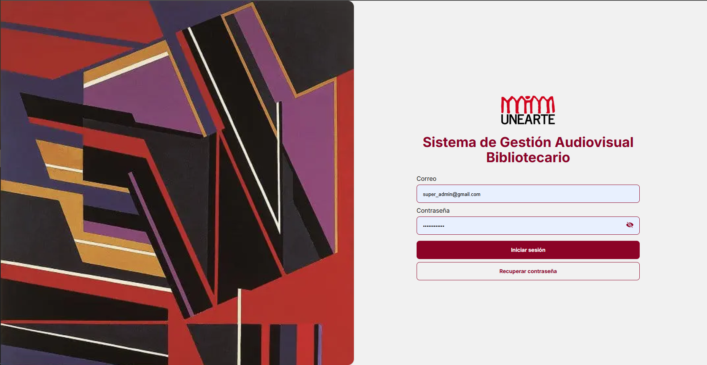
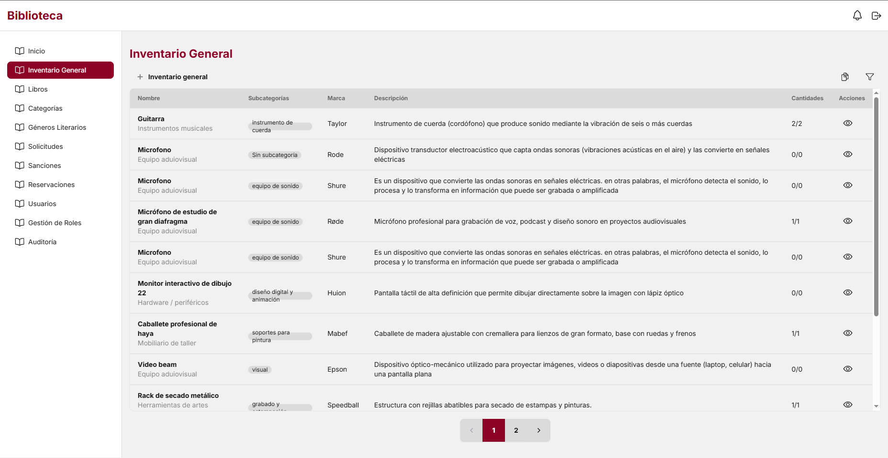
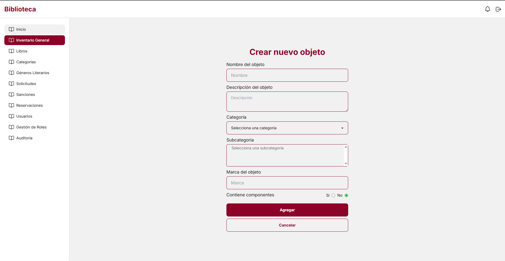
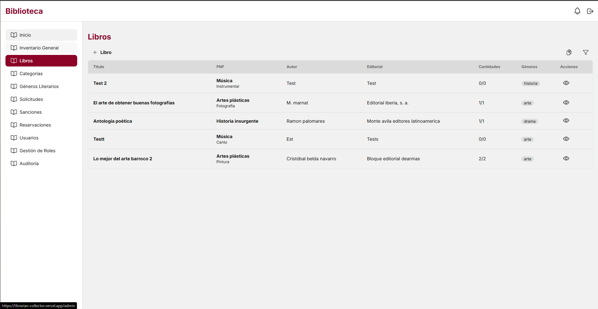
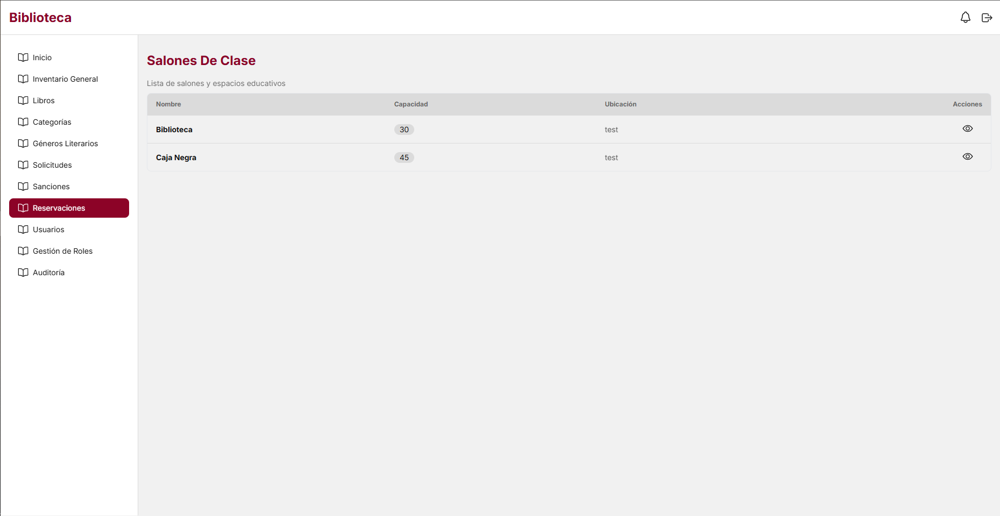

Acerca de:
1El Reto Actual
Los registros en papel y la falta de seguimiento en tiempo real generan caos. Es difícil saber quién tiene cada equipo o si hay disponibilidad inmediata.
2Nuestra Solución
Creamos un sistema inteligente que automatiza, agiliza y transparenta la disponibilidad de los libros y equipos audiovisuales en tiempo real.
3Nuestro Impacto
Mejoramos la experiencia académica asegurando que los profesores tengan sus equipos listos para clase y los estudiantes un acceso organizado a sus libros.
Estructura del software
1Gestión de Equipos Audiovisuales
Control total, registro masivo y catálogo digitalizado de todos los equipos técnicos disponibles en la institución.
2Gestión de Préstamos de Biblioteca
Organización automatizada del inventario de libros y trámites de solicitudes rápidas para toda la comunidad estudiantil.
3Control de Cronograma de Actividades
Reserva digital de aulas y espacios comunes para profesores, garantizando un control eficiente de los horarios disponibles.
Galería







Nuestra Experiencia
Inicio
El Origen: El programa nace de una necesidad operativa real: optimizar el control de equipos audiovisuales en Unearte. Identificamos que el sistema manual generaba errores en el inventario y largas esperas en los préstamos.
Desarrollo
La Evolución: Diseñamos una plataforma integral dividida en dos módulos principales: el Módulo Audiovisual para el catálogo técnico y el Módulo de Biblioteca para los libros, permitiendo registrar recursos y gestionar solicitudes digitalmente.
Culminación
El Cierre: Expandimos el sistema con el Módulo de Cronograma de Actividades para gestionar las aulas de Unearte. Los profesores reservan espacios digitalmente, controlando los horarios y evitando por completo el choque de actividades recreativas.